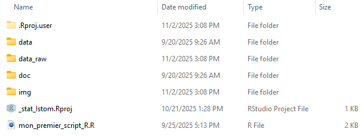
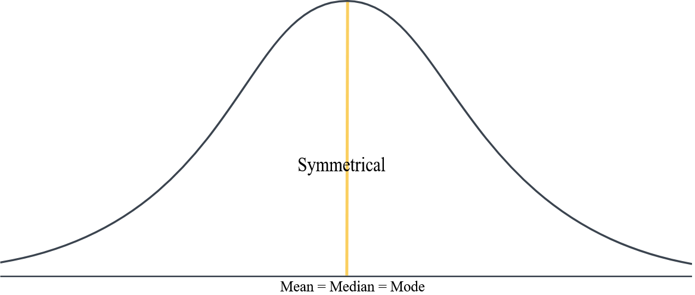
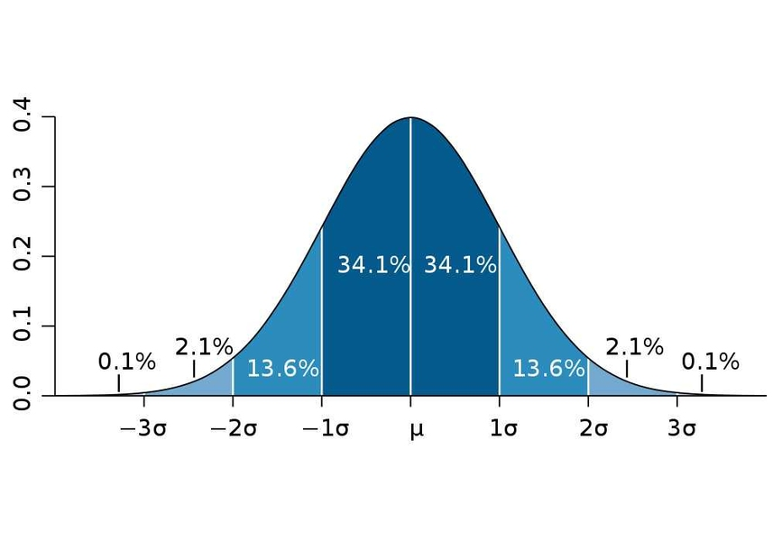
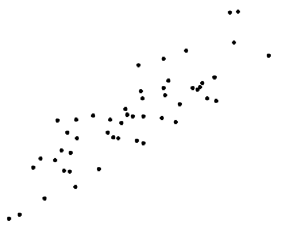
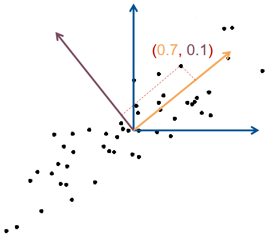
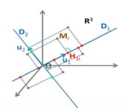

Statistics and data analysis
A brief intro to R and RStudio
- Free open source language
- Built to do statistics
- Updated by the mathematician from all over the world
- Amazing graphics !
- Widely used in biology, agronomy, economy, …
R and RStudio
Learn it, love it, use it !
Installation of R and RStudio
To Do !
Install R and RStudio for next class !
Good habits
- create a project on RStudio
- create ALWAYS 4 folders :
data_rawdataimgdoc
- Use the
helpfunction ! … and alsochat GPT…
WARNING ! It often writes code wayyyy too complicated ! - What you see in your OneDrive folder :

Launch RStudio
Always launch your RStudio project with
Using RStudio

Import DATA into RStudio
- Data used for this class :
Data.Lecture.xlsx
Important
You can download it by clicking on Data.Lecture.xlsx !
- Import data from an excel file
- Possible to import data from many more file formats …
Let’s get started
NOW “doing statistics” can get started !
Exploring Data
Before making statistical tests with your data it is essential to examine all your variables !
Why ? To “listen” to the data :
- to catch mistakes
- to see patterns in the data
- to find violations of statistical assumptions
- to generate hypotheses
- … and because if you don’t, you will have trouble later !
Numerical Summaries of Data
- Central Tendency measures. They are computed to give a “center” around which the measurements in the data are distributed.
- Variation or Variability measures. They describe “data spread” or how far away the measurements are from the center.
- Relative Standing measures. They describe the relative position of specific measurements in the data.
Mean(s)
The Mean
To calculate the average \(\overline{X}\) of a set of observations, add their value and divide by the number of observations
\[ \overline{x}=\frac{X_1+X_2+X_3+\ldots+X_n}{n}=\frac{1}{n} \sum_{i=1}^n x_i \]
Other mean
Weighted mean / Geometric mean / Harmonic mean / …
Median
- Median : the exact middle value
- Calculation :
- If there are an odd number of observations, find the middle value
- If there are an even number of observations, find the middle two values and average them
Example : \(17, 19, 21, 22, 23, 23, 23, 38\). The Median is \[\dfrac{22+23}{2}=22.5\]
Which Location Measure Is Best ?
- Mean is best for symmetric distributions without outliers

- Median is useful for skewed distributions or data with outliers

Variance
Average of squared deviations of values from the mean
\[ \sigma^2=\dfrac{\sum_\left(x_i-\bar{x}\right)^2}{n-1} \] where \(n\) is the the total number of observations
- Absolute values do not have nice mathematical properties
- Squares eliminate the negatives
Standard deviations are simply the square root of the variance
Five Number Summary
Quartiles divide data into 4 even parts
- first quartile \(Q_1=25\) th percentile
\(25\%\) of data fall below it and \(75\%\) above it
second quartile \(Q_2=\) median \(=50\) th percentile
third quartile \(Q_3=75\) th percentile
\(75 \%\) of data fall below it and 25% above it
Interquartile Range \((I Q R)=Q_3-Q_1\)
Five-Number Summary : \(\qquad \min , \quad Q_1, \quad \text { Median, } \quad Q_3, \quad \max\)
Example 1
For the 9 numbers: \[43, 35, 43, 33, 38, 53, 64, 27, 34\] give the Five-Number Summary.
Example 2
For the 10 numbers: \[43, 35, 43, 33, 38, 53, 64, 27, 34, 27\] give the Five-Number Summary.
Remark : Careful !
Statisticians don’t have a consensus on the calculation of quartiles. There are several formulas for quartiles.
With R for example 1, we find
\(Q_1=34\) and \(Q_2=43\).
Don’t worry about the formula.
Just keep in mind that quartiles divide data into 4 even parts.
Interesting Result
Regardless of how the data are distributed, \(75\%\) of values fall within \(\sigma\) from the mean !

Categorical / Qualitative variable(s)
- Ways to summarize of a single categorical variable
- Frequency tables
- Barplots, pie charts
- Ways to summarize of relationships between two categorical variables
- two-way contingency tables
- segmented barplots, standardized segmented barplots, mosaic plot
Two-Way Contingency Tables
A table that summarizes data for two categorical variables is called a contingency table.
Example : Numbers of vegetable produced wort by healthy and diseased
| Healthy | Diseased | Tot | |
|---|---|---|---|
| Carrots | 122 | 203 | 325 |
| Salads | 167 | 118 | 285 |
| Onions | 528 | 178 | 706 |
| Spinach | 623 | 212 | 885 |
| Sum | 1490 | 711 | 2201 |
Test for Normality
Create a histogram
Perform a Shapiro-Wilk Test
Perform a Kolmogorov-Smirnov Test
Produce some data
Create a Histogram

Shapiro-Wilk Test
Shapiro-Wilk normality test
data: normal_data
W = 0.9957, p-value = 0.1881
Shapiro-Wilk normality test
data: non_normal_data
W = 0.84498, p-value < 2.2e-16Kolmogorov-Smirnov Test
Asymptotic one-sample Kolmogorov-Smirnov test
data: normal_data
D = 0.031951, p-value = 0.6871
alternative hypothesis: two-sidedMultiple Linear regression
Few packages that are very useful to perform multiple linear regression
We “produce” data (FYI)
The data
# A tibble: 60 × 3
x1 x2 y
<dbl> <dbl> <dbl>
1 137. 97.0 205.
2 240. 109. 737.
3 215. 82.5 603.
4 134. 46.0 423.
5 289. 106. 878.
6 289. 63.7 951.
7 126. 58.8 267.
8 267. 66.2 869.
9 194. 41.9 672.
10 210. 26.6 744.
# ℹ 50 more rowsAssumptions
Model of the form \(y \sim \beta_0+\displaystyle\sum_{k=1}^p \beta_k x_k+\epsilon_i\)
- Assumes Linear relationship between \(y\) and \(x_1, x_2, \ldots, x_p\)
- Assumes the irreducible error (\(\epsilon_i\)) is normally distributed
- Assumes homoscedacisity, that is \(\epsilon_i\) does not depend on \(x_1, x_2, \ldots, x_p\)
- In this model, the variables \(x_i\) do not interact
- Always watch out for outliers !
A first look at the data

The model
Call:
lm(formula = y ~ x1 + x2, data = df)
Residuals:
Min 1Q Median 3Q Max
-72.286 -34.102 -2.892 30.163 87.738
Coefficients:
Estimate Std. Error t value Pr(>|t|)
(Intercept) -35.39079 24.19773 -1.463 0.149
x1 4.15232 0.08981 46.235 <2e-16 ***
x2 -2.66124 0.19657 -13.539 <2e-16 ***
---
Signif. codes: 0 '***' 0.001 '**' 0.01 '*' 0.05 '.' 0.1 ' ' 1
Residual standard error: 43.2 on 57 degrees of freedom
Multiple R-squared: 0.9772, Adjusted R-squared: 0.9764
F-statistic: 1220 on 2 and 57 DF, p-value: < 2.2e-16Few graphs to undersand the model


Predictions
# A tibble: 20 × 2
x1 x2
<dbl> <dbl>
1 120 101.
2 129. 54.1
3 139. 74.4
4 148. 90.4
5 158. 107.
6 167. 106.
7 177. 56.7
8 186. 71.3
9 196. 41.9
10 205. 58.5
11 215. 86.4
12 224. 36.4
13 234. 50.1
14 243. 34.1
15 253. 89.1
16 262. 31.1
17 272. 33.4
18 281. 52.5
19 291. 33.3
20 300 80.6\(\to\) We want to “predict” the y according to these x1 and x2
# A tibble: 20 × 3
x1 x2 predict
<dbl> <dbl> <dbl>
1 120 101. 193.
2 129. 54.1 358.
3 139. 74.4 344.
4 148. 90.4 340.
5 158. 107. 337.
6 167. 106. 377.
7 177. 56.7 548.
8 186. 71.3 548.
9 196. 41.9 666.
10 205. 58.5 661.
11 215. 86.4 626.
12 224. 36.4 799.
13 234. 50.1 802.
14 243. 34.1 883.
15 253. 89.1 777.
16 262. 31.1 970.
17 272. 33.4 1003.
18 281. 52.5 992.
19 291. 33.3 1082.
20 300 80.6 996.What is multivariate analysis ?
- Univariate statistics
- focus on a single variable of interest (at a time)
- estimate population parameters ( \(\pi, \mu, \sigma^2, \ldots\) )
- comparison of two or more groups
- Bivariate statistics
- focus on interdependencies of two variables
- correlation and co-occurrence
- Regression modelling
- predict single target variable (“dependent”)
- based on multiple other variables (“independent”)
- Multivariate statistics
- combined effects of many variables
- correlations and distribution patterns
- often “unsupervised” : no target variable or comparison groups
Principal Component Analysis (PCA)
- Intuition
- Four definitions
- Practical examples
- Mathematical example
- Case study
PCA - Goals
Dimension reduction to a few dimensions while explaining most of the variance
Find one-dimensional index that separates objects best
PCA - Intuition
Note
Find low-dimensional projection with largest spread



Dimension reduction : Only keep coordinate of first (few) Principal Component (PC)
Rotated basis :
- Vector 1 : Largest variance (1st PC)
- Vector 2 : Perpendicular (2nd PC)
| x1 | x2 | |
|---|---|---|
| Std. Basis | 0.3 | 0.5 |
| PC Basis | 0.7 | 0.1 |
| After Dim. Reduc. | 0.7 | - |
PCA - Otthogonal directions
PC 1 is the direction with largest variance
PC 2 is :
- perpendicular to PC 1
- again largest variance
PC 3 is :
- perpendicular to PC 1, PC 2
- again largest variance
…

Which kinds of data ?
PCA applies to data tables where : - rows are considered as individuals - and columns as quantitative variables
Example : Dataset Iris
Sepal.Length Sepal.Width Petal.Length Petal.Width Species
1 5.1 3.5 1.4 0.2 setosa
2 4.9 3.0 1.4 0.2 setosa
3 4.7 3.2 1.3 0.2 setosa
4 4.6 3.1 1.5 0.2 setosa
5 5.0 3.6 1.4 0.2 setosa
6 5.4 3.9 1.7 0.4 setosa
7 4.6 3.4 1.4 0.3 setosa
8 5.0 3.4 1.5 0.2 setosa
9 4.4 2.9 1.4 0.2 setosa
10 4.9 3.1 1.5 0.1 setosa
11 5.4 3.7 1.5 0.2 setosa
12 4.8 3.4 1.6 0.2 setosa
13 4.8 3.0 1.4 0.1 setosa
14 4.3 3.0 1.1 0.1 setosa
15 5.8 4.0 1.2 0.2 setosa
16 5.7 4.4 1.5 0.4 setosa
17 5.4 3.9 1.3 0.4 setosa
18 5.1 3.5 1.4 0.3 setosa
19 5.7 3.8 1.7 0.3 setosa
20 5.1 3.8 1.5 0.3 setosa
21 5.4 3.4 1.7 0.2 setosa
22 5.1 3.7 1.5 0.4 setosa
23 4.6 3.6 1.0 0.2 setosa
24 5.1 3.3 1.7 0.5 setosa
25 4.8 3.4 1.9 0.2 setosa
26 5.0 3.0 1.6 0.2 setosa
27 5.0 3.4 1.6 0.4 setosa
28 5.2 3.5 1.5 0.2 setosa
29 5.2 3.4 1.4 0.2 setosa
30 4.7 3.2 1.6 0.2 setosa
31 4.8 3.1 1.6 0.2 setosa
32 5.4 3.4 1.5 0.4 setosa
33 5.2 4.1 1.5 0.1 setosa
34 5.5 4.2 1.4 0.2 setosa
35 4.9 3.1 1.5 0.2 setosa
36 5.0 3.2 1.2 0.2 setosa
37 5.5 3.5 1.3 0.2 setosa
38 4.9 3.6 1.4 0.1 setosa
39 4.4 3.0 1.3 0.2 setosa
40 5.1 3.4 1.5 0.2 setosa
41 5.0 3.5 1.3 0.3 setosa
42 4.5 2.3 1.3 0.3 setosa
43 4.4 3.2 1.3 0.2 setosa
44 5.0 3.5 1.6 0.6 setosa
45 5.1 3.8 1.9 0.4 setosa
46 4.8 3.0 1.4 0.3 setosa
47 5.1 3.8 1.6 0.2 setosa
48 4.6 3.2 1.4 0.2 setosa
49 5.3 3.7 1.5 0.2 setosa
50 5.0 3.3 1.4 0.2 setosa
51 7.0 3.2 4.7 1.4 versicolor
52 6.4 3.2 4.5 1.5 versicolor
53 6.9 3.1 4.9 1.5 versicolor
54 5.5 2.3 4.0 1.3 versicolor
55 6.5 2.8 4.6 1.5 versicolor
56 5.7 2.8 4.5 1.3 versicolor
57 6.3 3.3 4.7 1.6 versicolor
58 4.9 2.4 3.3 1.0 versicolor
59 6.6 2.9 4.6 1.3 versicolor
60 5.2 2.7 3.9 1.4 versicolor
61 5.0 2.0 3.5 1.0 versicolor
62 5.9 3.0 4.2 1.5 versicolor
63 6.0 2.2 4.0 1.0 versicolor
64 6.1 2.9 4.7 1.4 versicolor
65 5.6 2.9 3.6 1.3 versicolor
66 6.7 3.1 4.4 1.4 versicolor
67 5.6 3.0 4.5 1.5 versicolor
68 5.8 2.7 4.1 1.0 versicolor
69 6.2 2.2 4.5 1.5 versicolor
70 5.6 2.5 3.9 1.1 versicolor
71 5.9 3.2 4.8 1.8 versicolor
72 6.1 2.8 4.0 1.3 versicolor
73 6.3 2.5 4.9 1.5 versicolor
74 6.1 2.8 4.7 1.2 versicolor
75 6.4 2.9 4.3 1.3 versicolor
76 6.6 3.0 4.4 1.4 versicolor
77 6.8 2.8 4.8 1.4 versicolor
78 6.7 3.0 5.0 1.7 versicolor
79 6.0 2.9 4.5 1.5 versicolor
80 5.7 2.6 3.5 1.0 versicolor
81 5.5 2.4 3.8 1.1 versicolor
82 5.5 2.4 3.7 1.0 versicolor
83 5.8 2.7 3.9 1.2 versicolor
84 6.0 2.7 5.1 1.6 versicolor
85 5.4 3.0 4.5 1.5 versicolor
86 6.0 3.4 4.5 1.6 versicolor
87 6.7 3.1 4.7 1.5 versicolor
88 6.3 2.3 4.4 1.3 versicolor
89 5.6 3.0 4.1 1.3 versicolor
90 5.5 2.5 4.0 1.3 versicolor
91 5.5 2.6 4.4 1.2 versicolor
92 6.1 3.0 4.6 1.4 versicolor
93 5.8 2.6 4.0 1.2 versicolor
94 5.0 2.3 3.3 1.0 versicolor
95 5.6 2.7 4.2 1.3 versicolor
96 5.7 3.0 4.2 1.2 versicolor
97 5.7 2.9 4.2 1.3 versicolor
98 6.2 2.9 4.3 1.3 versicolor
99 5.1 2.5 3.0 1.1 versicolor
100 5.7 2.8 4.1 1.3 versicolor
101 6.3 3.3 6.0 2.5 virginica
102 5.8 2.7 5.1 1.9 virginica
103 7.1 3.0 5.9 2.1 virginica
104 6.3 2.9 5.6 1.8 virginica
105 6.5 3.0 5.8 2.2 virginica
106 7.6 3.0 6.6 2.1 virginica
107 4.9 2.5 4.5 1.7 virginica
108 7.3 2.9 6.3 1.8 virginica
109 6.7 2.5 5.8 1.8 virginica
110 7.2 3.6 6.1 2.5 virginica
111 6.5 3.2 5.1 2.0 virginica
112 6.4 2.7 5.3 1.9 virginica
113 6.8 3.0 5.5 2.1 virginica
114 5.7 2.5 5.0 2.0 virginica
115 5.8 2.8 5.1 2.4 virginica
116 6.4 3.2 5.3 2.3 virginica
117 6.5 3.0 5.5 1.8 virginica
118 7.7 3.8 6.7 2.2 virginica
119 7.7 2.6 6.9 2.3 virginica
120 6.0 2.2 5.0 1.5 virginica
121 6.9 3.2 5.7 2.3 virginica
122 5.6 2.8 4.9 2.0 virginica
123 7.7 2.8 6.7 2.0 virginica
124 6.3 2.7 4.9 1.8 virginica
125 6.7 3.3 5.7 2.1 virginica
126 7.2 3.2 6.0 1.8 virginica
127 6.2 2.8 4.8 1.8 virginica
128 6.1 3.0 4.9 1.8 virginica
129 6.4 2.8 5.6 2.1 virginica
130 7.2 3.0 5.8 1.6 virginica
131 7.4 2.8 6.1 1.9 virginica
132 7.9 3.8 6.4 2.0 virginica
133 6.4 2.8 5.6 2.2 virginica
134 6.3 2.8 5.1 1.5 virginica
135 6.1 2.6 5.6 1.4 virginica
136 7.7 3.0 6.1 2.3 virginica
137 6.3 3.4 5.6 2.4 virginica
138 6.4 3.1 5.5 1.8 virginica
139 6.0 3.0 4.8 1.8 virginica
140 6.9 3.1 5.4 2.1 virginica
141 6.7 3.1 5.6 2.4 virginica
142 6.9 3.1 5.1 2.3 virginica
143 5.8 2.7 5.1 1.9 virginica
144 6.8 3.2 5.9 2.3 virginica
145 6.7 3.3 5.7 2.5 virginica
146 6.7 3.0 5.2 2.3 virginica
147 6.3 2.5 5.0 1.9 virginica
148 6.5 3.0 5.2 2.0 virginica
149 6.2 3.4 5.4 2.3 virginica
150 5.9 3.0 5.1 1.8 virginica- 150 individuals (rows) : flowers
- 5 variables 30 variables (columns) :
- 4 continuous variables
- 1 categorical variable
The data table can be seen as :
a set of rows
OR a set of columns
Studying individuals :
When can we say that 2 individuals are similar with respect to all the variables ?
If there are many individuals, is it possible to categorize them ?
The clouds of individuals
- 1 individual = 1 row = 1 point in \(\mathbb{R}^k\) (for iris, \(k=5\))
- If \(k=1\) : axial representation
- If \(k=2\) : scatter plot
- If \(k=3\) : 3D representation (more difficult)
- if \(k=4\) : impossible to “see”
- Notion of similiarity : Distance between indiduals i and j
\[d^2\left(i, j\right)=\sum_{\ell=1}^k\left(x_{i \ell}-x_{j \ell}\right)^2\]
Note
Studying the individuals = Studying the shape of the clouds of individuals
Centering – standardizing data
Centering does not modify the shape of the cloud
Standardizing data is necessary if units are different between variables
Note
Principal component analysis (PCA) = Studying the standardized data set
Fitting the cloud of individuals
PCA searches for the best summary space for optimal visualization of the clouds of individuals.
Viewpoint quality :
faithfully reproduce the cloud’s shape
best representation of diversity, variability
doesn’t distort distances between individuals
How to quantify the quality of a viewpoint ?
notion of dispersion, of variability, also called inertia
Inertia is the variance generalized to several dimensions.
First example of PCA
Data
| \(P\) \(\left(\text{cm}\right)\) | \(T_{\text{max}}\) \(\left(^\circ C\right)\) | \(T_{\text{min}}\) \(\left(^\circ C\right)\) | |
|---|---|---|---|
| Ajaccio | 12,04 | 23,7 | 5,9 |
| Brest | 17,18 | 15,5 | -1,8 |
| Dunkerque | 11,83 | 13,1 | 2,8 |
| Nancy | 6,23 | 13,5 | -2,4 |
| Nice | 16,99 | 21,1 | 7,2 |
| Toulouse | 3,87 | 20,3 | -0,9 |
| \(P\) \(\left(\text{cm}\right)\) | \(T_{\text{max}}\) \(\left(^\circ C\right)\) | \(T_{\text{min}}\) \(\left(^\circ C\right)\) | |
|---|---|---|---|
| Ajaccio | 12,04 | 23,7 | 5,9 |
| Brest | 17,18 | 15,5 | -1,8 |
| Dunkerque | 11,83 | 13,1 | 2,8 |
| Nancy | 6,23 | 13,5 | -2,4 |
| Nice | 16,99 | 21,1 | 7,2 |
| Toulouse | 3,87 | 20,3 | -0,9 |
| \(\mu\) | 11,36 | 17,87 | 1,8 |
| \(\sigma\) | 4,98 | 4,04 | 3,76 |
\[x_{i k}=\frac{x_{i k}-\overline{X_k}}{\sigma_k}\]
| \(P\) \(\left(\text{cm}\right)\) | \(T_{\text{max}}\) \(\left(^\circ C\right)\) | \(T_{\text{min}}\) \(\left(^\circ C\right)\) | |
|---|---|---|---|
| Ajaccio | 0,14 | 1,44 | 1,09 |
| Brest | 1,17 | -0,59 | -0,96 |
| Dunkerque | 0,10 | -1,18 | 0,27 |
| Nancy | -1,03 | -1,08 | -1,12 |
| Nice | 1,13 | 0,80 | 1,44 |
| Toulouse | -1,50 | 0,60 | -0,72 |
Correlation Matrix
| \(P\) | \(T_{\text{max}}\) | \(T_{\text{min}}\) | |
|---|---|---|---|
| \(P\) | 1 | \(r\left(P, T_{\text{max} }\right)\) | \(r\left(P, T_{\text{min} }\right)\) |
| \(T_{\text{max} }\) | \(r\left(T_{\text{max} }, P\right)\) | 1 | \(r\left(T_{\text{max} }, T_{\text{min} }\right)\) |
| \(T_{\text{min} }\) | \(r\left(T_{\text{min} }, P\right)\) | \(r\left(T_{\text{min} }, T_{\text{max} }\right)\) | 1 |
\[r\left(P, T_{\text{max} }\right) = r\left(T_{\text{max} }, P\right)\]
\[C = \frac{1}{N} \ X_{cr}^T \ X_{cr}\]
| \(P\) | \(T_{\text{max} }\) | \(T_{\text{min} }\) | |
|---|---|---|---|
| \(P\) | 1 | 0,09 | 0,49 |
| \(T_{\text{max} }\) | 0,09 | 1 | 0,62 |
| \(T_{\text{min} }\) | 0,49 | 0,62 | 1 |
Eigenvalues and Eigenvectors
\[C = \begin{pmatrix} 1 & 0.09 & 0.49 \\ 0.09 & 1 & 0.62 \\ 0.49 & 0.62 & 1 \end{pmatrix}\]
How do we do it now ?
Eigenvalues and Eigenvectors
We find
- \(\lambda_1 = 1,83\quad\) with \(\quad v_1=\begin{pmatrix} 0.46 \\ 0.56 \\ 0.69 \end{pmatrix}\)
- \(\lambda_2 = 0.92\quad\) with \(\quad v_2=\begin{pmatrix} 0.79 \\ -0.61 \\ -0.03 \end{pmatrix}\)
- \(\lambda_3 = 0.25\quad\) with \(\quad v_3=\begin{pmatrix} 0.41 \\ 0.56 \\ -0.72 \end{pmatrix}\)
Inertia (generalized variance)
\[ \mbox{Total inertia} = \sum \mbox{eigenvalues} \ = 3 \]
| Eigenvalue | Inertia (%) | Inertia Cumul. (%) | |
|---|---|---|---|
| \(\lambda_1\) | 1,83 | 61,17 | 61,17 |
| \(\lambda_2\) | 0,92 | 30,51 | 91,68 |
| \(\lambda_3\) | 0,25 | 8,32 | 100,00 |
\[X_{cr} =\left[\begin{array}{rrr}0,14 & 1,44 & 1,09 \\ 1,17 & -0,59 & -0,96 \\ 0,10 & -1,18 & 0,27 \\ -1,03 & -1,08 & -1,12 \\ 1,13 & 0,80 & 1,44 \\ -1,50 & 0,60 & -0,72\end{array}\right]\]



Principal components
\[X_{cr} =\left[\begin{array}{rrr}0,14 & 1,44 & 1,09 \\ 1,17 & -0,59 & -0,96 \\ 0,10 & -1,18 & 0,27 \\ -1,03 & -1,08 & -1,12 \\ 1,13 & 0,80 & 1,44 \\ -1,50 & 0,60 & -0,72\end{array}\right]\]
\[v_1=\begin{pmatrix} 0.46 \\ 0.56 \\ 0.69 \end{pmatrix} \qquad v_2=\begin{pmatrix} 0.79 \\ -0.61 \\ -0.03 \end{pmatrix}\]
We do \(X_{cr} v_1\) and \(X_{cr} v_2\)
We get \[\begin{pmatrix} 1,63 \\ -0,45 \\ -0,43 \\ -1,85 \\ 1,96 \\ -0,85 \end{pmatrix}\] and \[\begin{pmatrix}-0,81 \\ 1,31 \\ 0,79 \\ -0,12 \\ 0,37 \\ -1,54\end{pmatrix}\]
| \(\mathrm{F}_1\) | \(\mathrm{F}_2\) | \(\mathrm{F}_3\) | |
|---|---|---|---|
| Ajaccio | 1,63 | -0,81 | 0,07 |
| Brest | -0,45 | 1,31 | 0,84 |
| Dunkerque | -0,43 | 0,79 | -0,81 |
| Nancy | -1,85 | -0,12 | -0,21 |
| Nice | 1,96 | 0,37 | -0,13 |
| Toulouse | -0,85 | -1,54 | 0,24 |
| \(\mu\) | 0 | 0 | 0 |
| \(\sigma^2\) | 1,83 | 0,92 | 0,25 |
Cercle de corrélation
\(r(P,F_1) = \mbox{First coordinate of } v_1 \times \sqrt{\lambda_1} = 0.62\)
| \(F_1\) | \(F_2\) | \(F_3\) | |
|---|---|---|---|
| \(P\) | 0,62 | 0,76 | 0,21 |
| \(T_{\text{max} }\) | 0,76 | \(-0,59\) | 0,28 |
| \(T_{\min }\) | 0,93 | \(-0,03\) | \(-0,36\) |